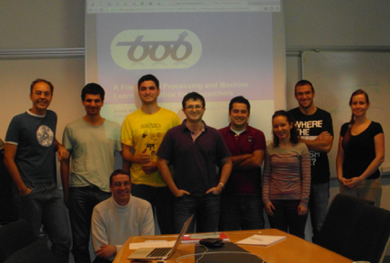

Research Team



From left to right: André Anjos, Laurent El Shafey, Manuel Günther, Tiago de Freitas Pereira, Sébastien Marcel, Elie El Khoury, Ivana Chingovska, Javier Galbally, Nesli Erdogmus and BOB on the top.
The Team
-
•Laurent El Shafey (PhD student) started in January 2010
-
•Dr André Anjos (PostDoc) started in June 2010
-
•Ivana Cingovska (PhD student) started in November 2011
-
•Dr Manuel Günther (PostDoc) started in January 2012
-
•Tiago de Freitas Pereira (visiting student) started in July 2012
-
•Dr Nesli Erdogmus (PostDoc) started in July 2012
-
•Dr Elie El Khoury (PostDoc) started in August 2012
-
•Dr Javier Galbally (visiting researcher) started in October 2012
Teams ... yearly !
During the past years I had the chance to work with those folks:
-
•Dr Christopher McCool, PostDoc, now at NICTA (AU)
-
•Dr Roy Wallace, PostDoc, now at Zap Technology
-
•Dr Venkatesh Bala Subburaman, PhD student, graduated in 2012, now at Multitel
-
•Dr Anindya Roy, PhD student, graduated in 2011. now at LIMSI (FR)
-
•Dr Guillaume Heusch, PhD student, graduated in 2009, now at SICPA Security Solutions
-
•Dr Agnes Just, PhD student, graduated in 2006
-
•Dr Yann Rodriguez, PhD student graduated in 2006, now at Idiap and KeyLemon
-
•Dr Fabien Cardinaux, PhD student graduated in 2005, now at Sony
-
•Dr Mitch McLaren, PostDoc at Radboud University Nijmegen and now at SRI
-
•Niklas Johansson, Research Assistant, 2011
-
•Jordi Sanchez-Riera, Master student, 2009
-
•Javier Galbally, PhD student, 2009
-
•Simon Jacquier, EPFL Master student, 2008
-
•Anh-Thu Nguyen, EPFL Master student, 2007
-
•Jean Keomany, EPFL Master student, 2006
-
•Tiffany Sauquet, EURECOM Master student, 2005
Thanks to all of them.
A Tribute to Students